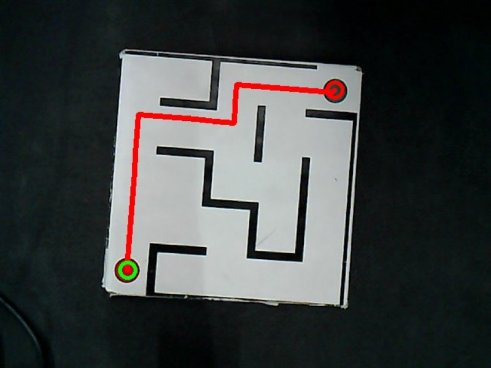
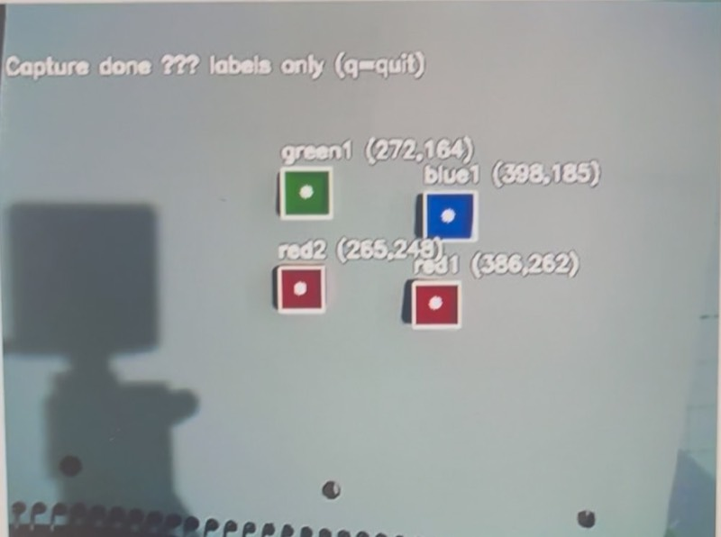
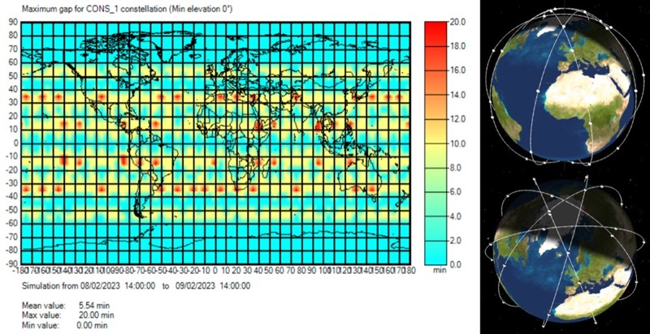
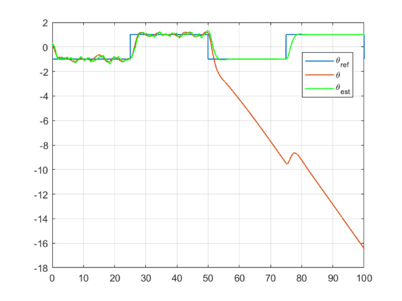
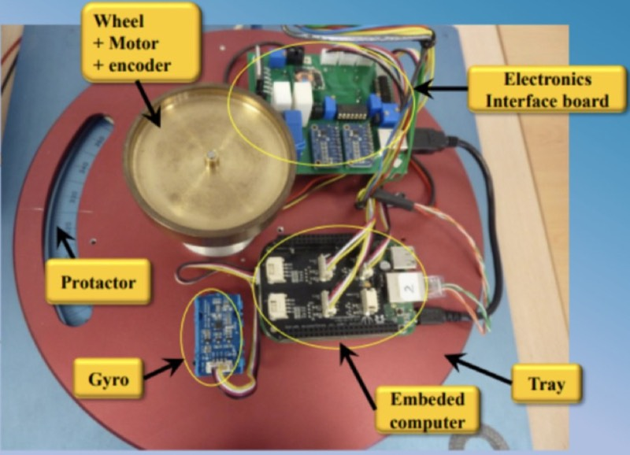
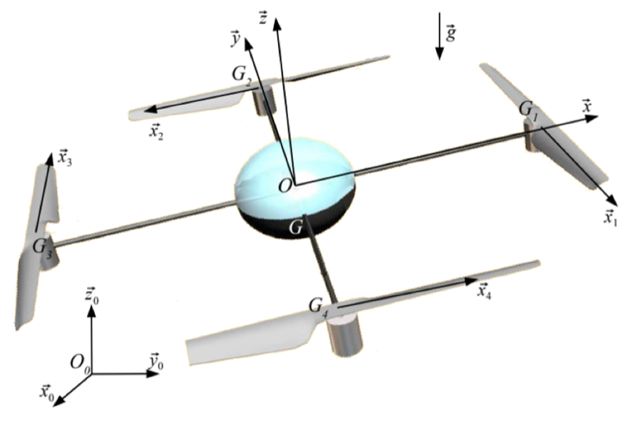
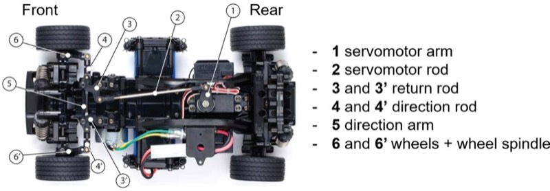
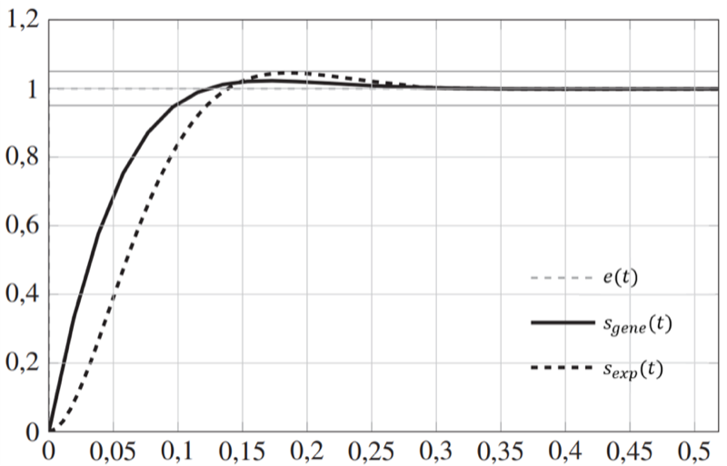
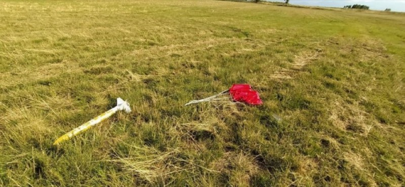
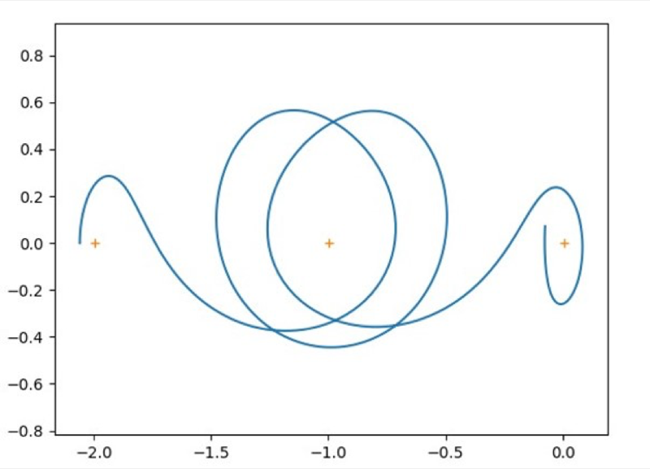

Vision-based maze solving
A 4-DOF arm reads a printed maze from an overhead camera and traces the solution: affine hand–eye calibration to 1.34 mm, perspective rectification, occupancy grid, and BFS path planning.
Graduate coursework and earlier projects.
Graduate coursework at ASU. Both built on a Dobot Magician 4-DOF arm with an overhead camera.

A 4-DOF arm reads a printed maze from an overhead camera and traces the solution: affine hand–eye calibration to 1.34 mm, perspective rectification, occupancy grid, and BFS path planning.

Plain-English commands drive the arm, with Gemini function calling acting as the controller — resolving spatial references like “on top of” into calibrated metric offsets.
Team and individual projects from my master’s at ISAE-SUPAERO.

A six-person Integrated Team Project designing a 40-satellite meteorological constellation — GNSS radio occultation and microwave sounding on a platform shared across several student missions to cut cost. I owned AOCS and mission analysis.

Modelling, robust control and gyro-stellar Kalman estimation for the DEMETER micro-satellite — structured H∞, a switching law for large slews, magnetorquer desaturation, and μ-analysis over uncertain flexible modes.

Taking a controller from Simulink to C on embedded hardware: task scheduling, model reduction, discretisation, and a hard 0.66 A current limit that decides which designs are actually flyable.
From my exchange at PoliMi.

Full quadrotor model down to the motor electro-mechanics, then altitude and
attitude loops synthesised with hinfstruct against ±3σ
parameter uncertainty, with a state observer and Monte Carlo validation.
Control, system identification and optimization.

Detection conditions, trajectory geometry and steering identification for an automated parking manoeuvre, developed and tested on a radio-controlled car because real vehicle data is confidential.

Treating controller tuning as a search problem. Beats pole-compensation tuning on both settling time and overshoot, in ~50 generations against a space that would take 92,000 years to enumerate.
Projects from before the PhD, kept here because they are where the interest and fun started.

Designing, building and flying a student mini-rocket with a pressure-based altitude experiment, launched at C’space.

A self-directed study of the circular restricted three-body problem: monodromy analysis, invariant manifolds, and a shooting method for periodic orbits. Written during my classe préparatoire.